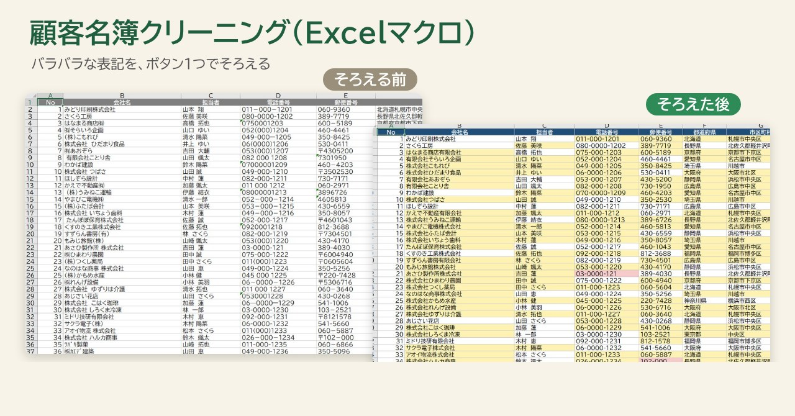
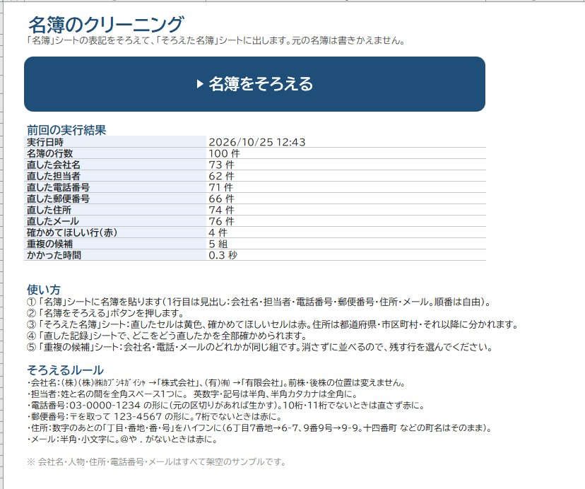
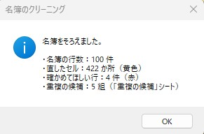
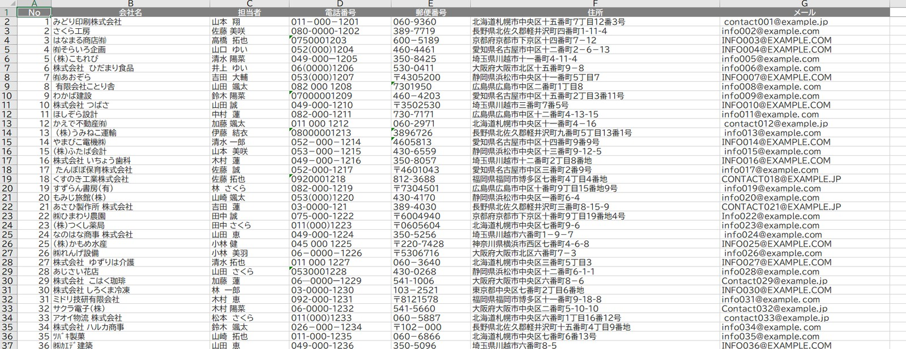
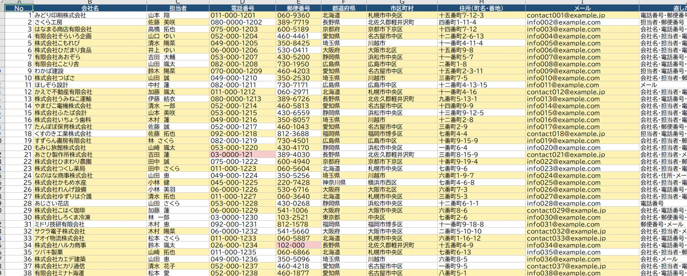
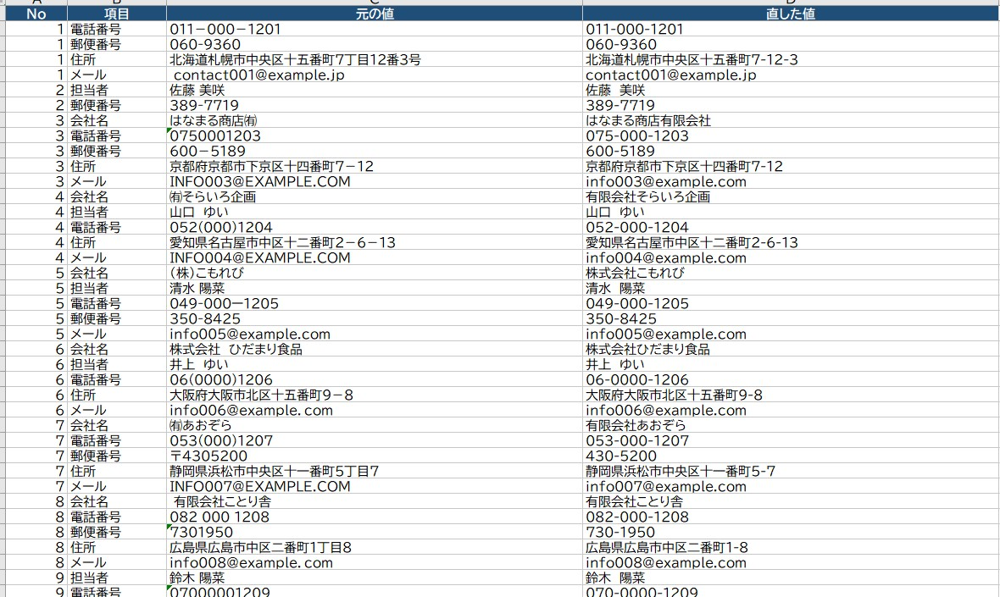
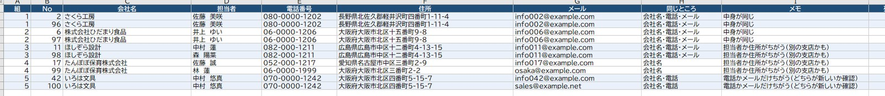

← 制作実績一覧へ戻る
見本ファイルつき
顧客名簿クリーニング（Excelマクロ）
「（株）」と「株式会社」、全角と半角の電話番号、つながった住所。人によって書き方がちがう名簿を、ボタン1つでそろえます。元の名簿は書きかえません。

想定した依頼
「何人もで入力してきた顧客名簿を、DMの宛名や新しいシステムへの移行に使いたい。でも会社名の書き方も電話番号の形もバラバラで、同じ会社が2回入っていることもある。1件ずつ手で直すのは大変」。こんなご相談を想定して作りました。
作ったもの
「名簿」シートに名簿を貼って「操作」シートのボタンを押すと、次の3つのシートができます。
- そろえた名簿：表記をそろえた結果。直したセルは黄色、人の目で確かめてほしいセルは赤
- 直した記録：どのセルを、何から何に直したか（1件ずつ）
- 重複の候補：同じ会社かもしれない行の組と、「中身が同じ」「別の支店かも」などのメモ






そろえる内容
- 会社名：（株）・㈱ → 株式会社、（有）・㈲ → 有限会社。よけいな空白をとる
- 担当者：姓と名のあいだを全角スペース1つに
- 電話番号・郵便番号：全角を半角に、ハイフンの形をそろえる（03-0000-0000／123-4567）
- 住所：都道府県・市区町村・町名番地の3つに分け、「7丁目12番3号」を「7-12-3」に
- メール：全角・大文字・空白をなおす
工夫した点
- 勝手に決めない：桁数が足りない電話番号や@のないメールは、推測で直さず赤で知らせます。重複も自動で消さず、並べて見せるだけにしました。
- あとから確かめられる：元の名簿はそのまま残し、直した422か所はすべて「直した記録」に残ります。
- 名簿の形がちがっても使える：見出しの名前で列を探すので、列の順番がちがう名簿でもそのまま貼って使えます。「十四番町」のような町名の漢数字は変えません。
規模と制作時間
- 名簿 100件（6項目）を 約0.3秒 でそろえ、直したセル422か所・確かめてほしい行4件・重複の候補5組を出力
- 制作：仕様決めから完成まで 約30分（AIと一緒に作成し、100件すべてを正解の表と照らし合わせ、実際のExcelでも動作確認）
見本ファイル
動かして試せる見本です（架空の名簿100件入り）。
こんなご依頼にも対応できます
- 顧客名簿や会員名簿の表記をそろえて、DMや宛名印刷に使いたい
- 新しいシステムに移す前に、古いデータを整理したい
- 名簿の重複を見つけて、1つにまとめたい
注意
会社名・人名・住所・電話番号・メールはすべて架空のサンプルです。
ダウンロードしたファイルは、Windowsの設定でマクロが止められることがあります。ファイルを右クリック →「プロパティ」→「許可する」にチェックしてから開いてください。